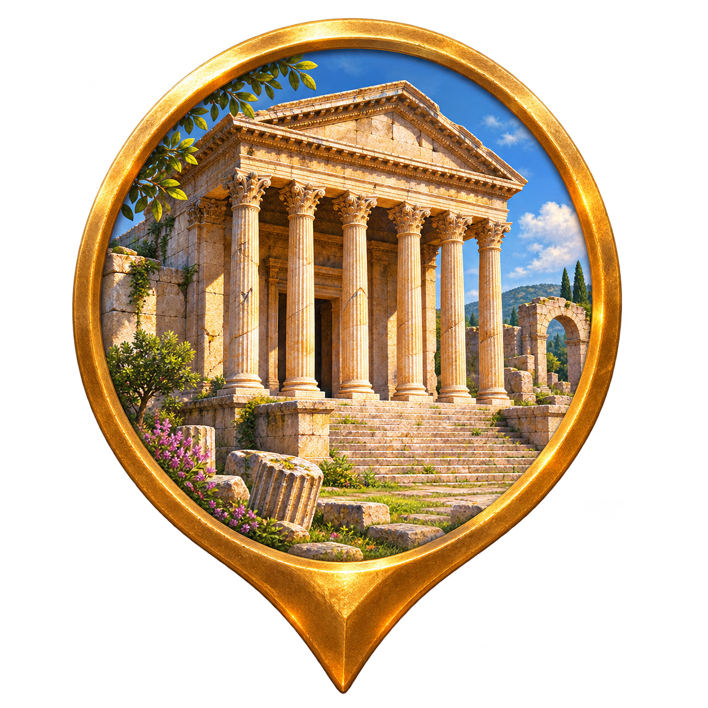
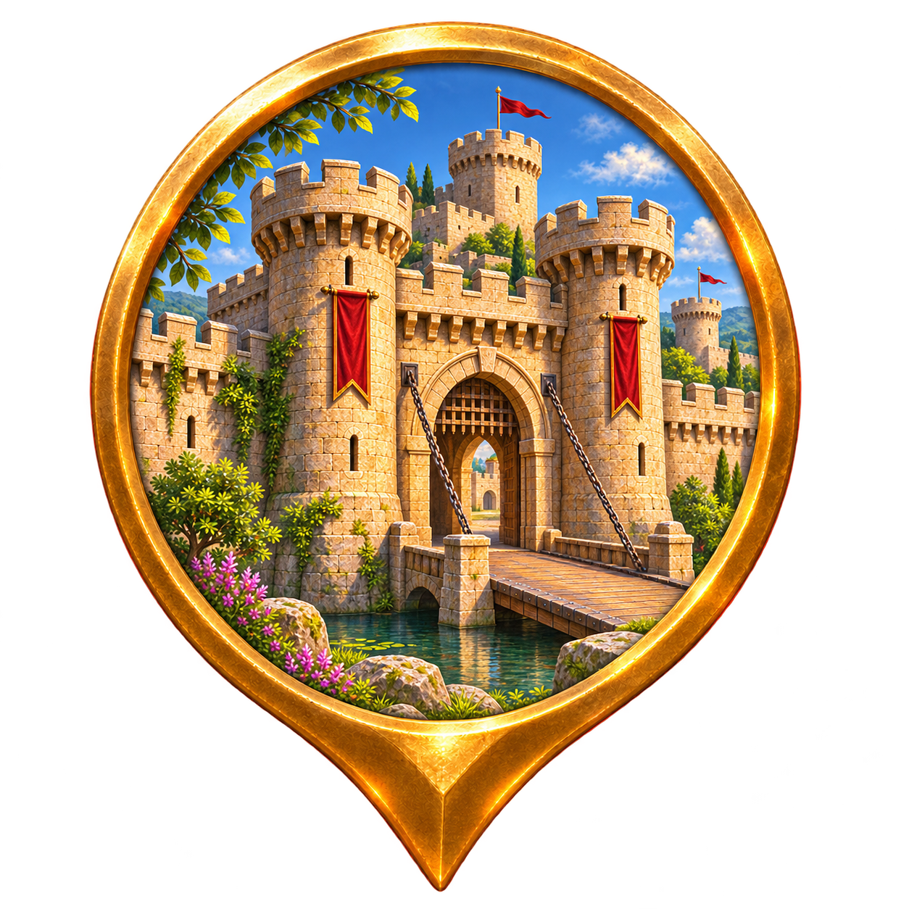
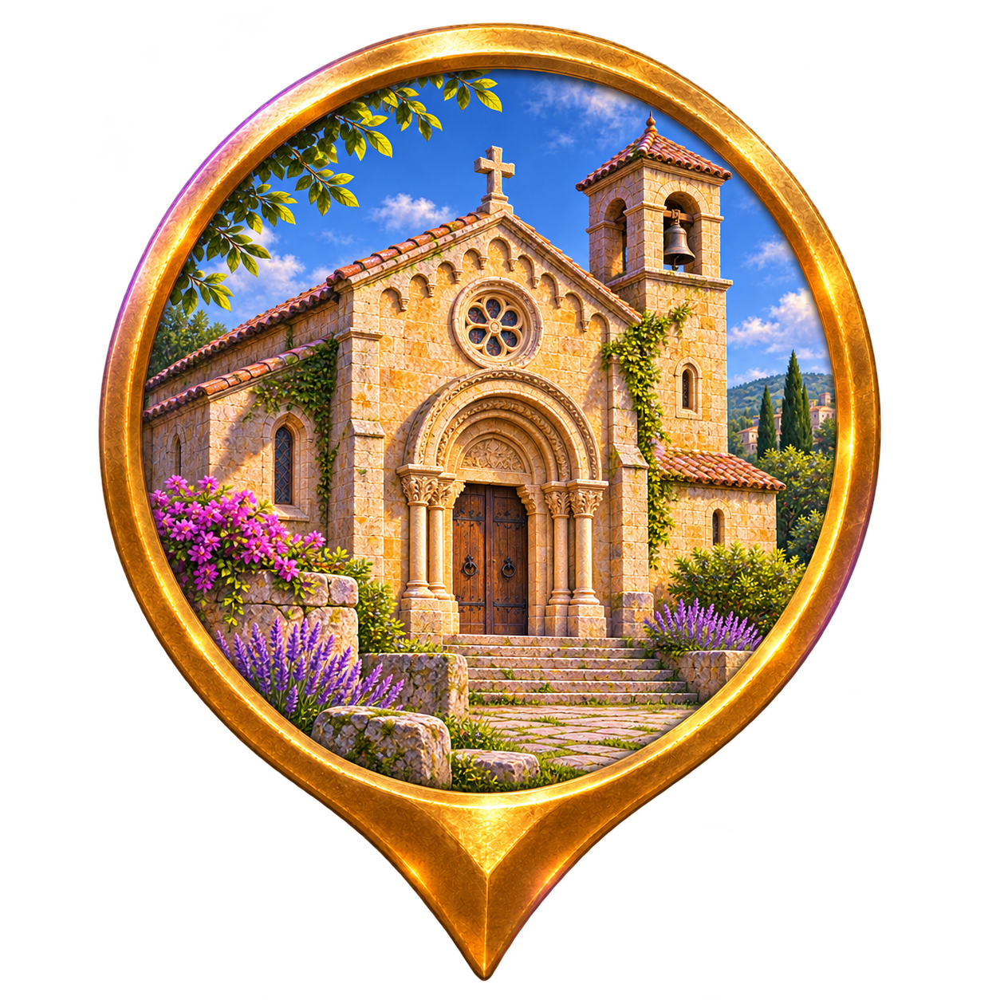
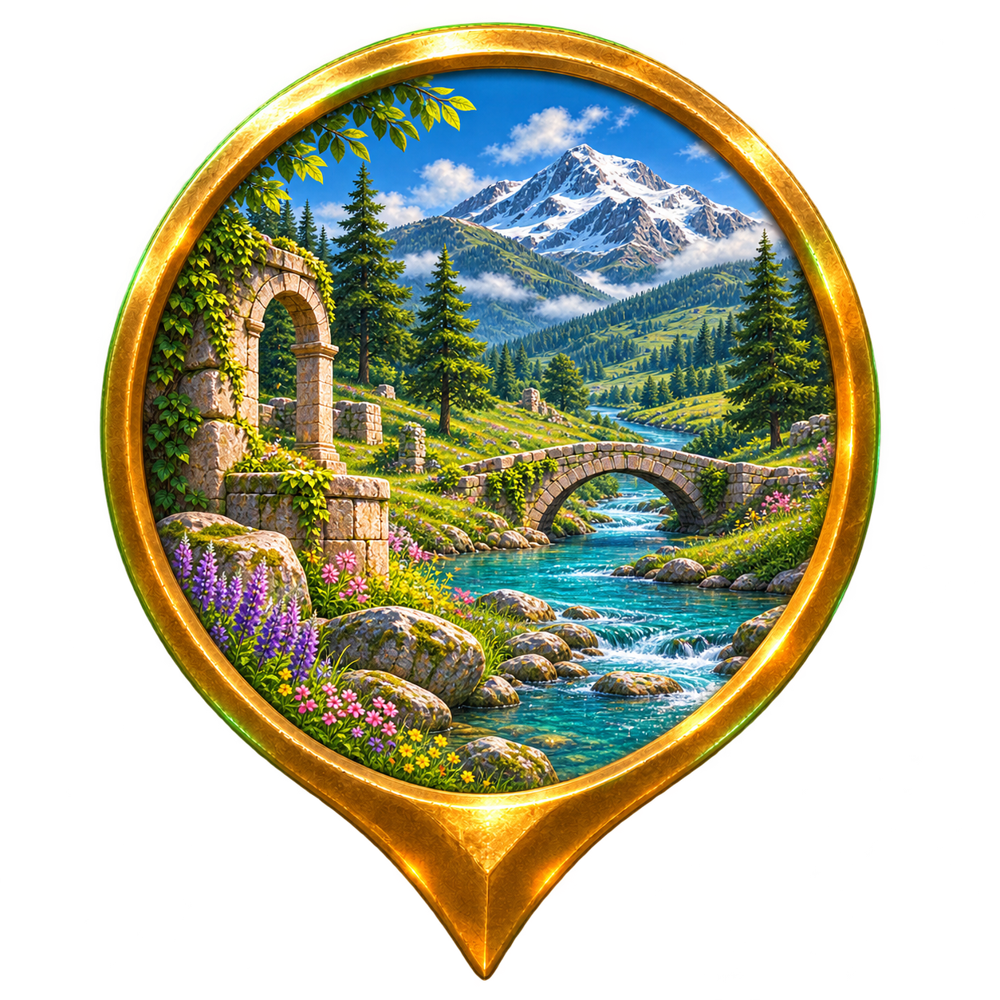
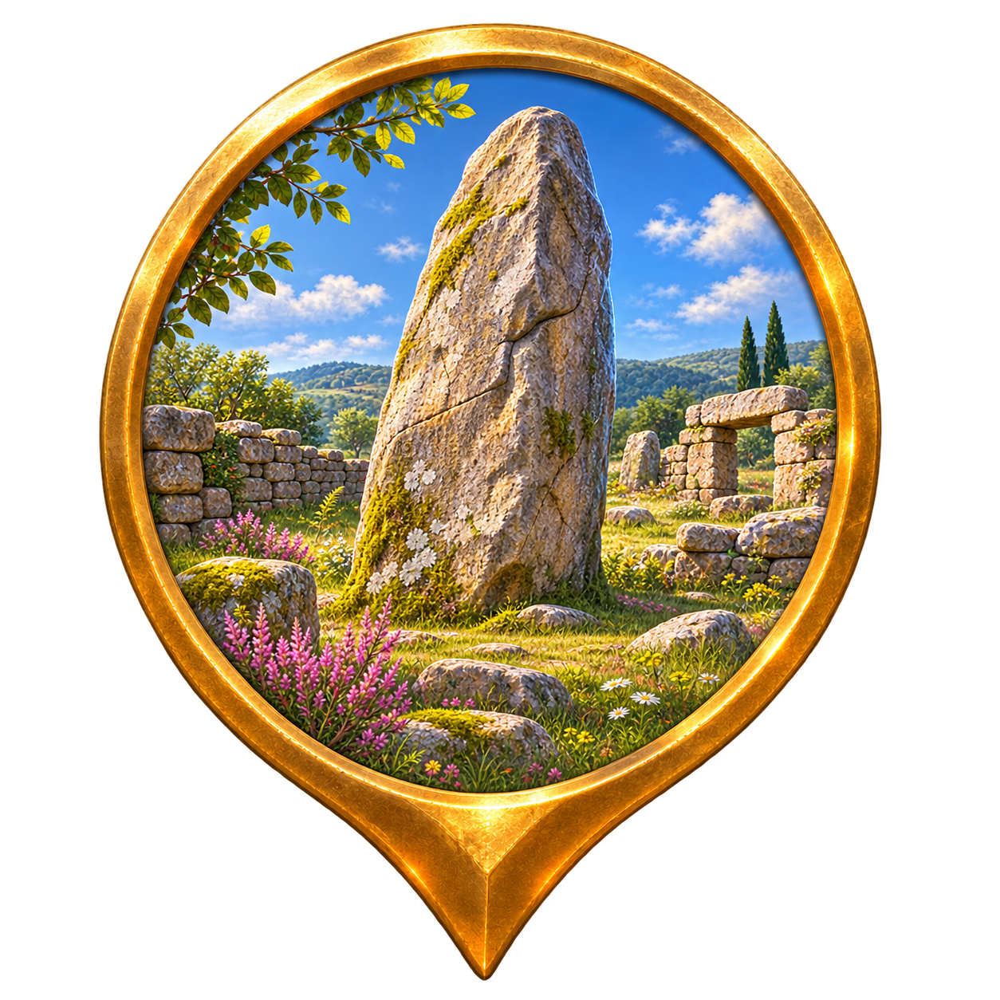

VESTIGE · ASSETS DE PRODUCTION
Des lieux à explorer.
Sept illustrations individuelles à fond transparent. Planche de contrôle des vrais PNG et sceaux utilisés par l’application ; ce n’est pas une capture de carte native.

Temple et vestigesMusée
Château et fortifications
Édifice religieuxPatrimoine industriel
Nature
Autre patrimoineLe cadre doré est décoratif. Ces images illustrent des catégories et ne sont pas des photographies documentaires ou des reconstitutions certifiées de monuments précis.
À la taille de la carte · 52–62 px
Contrôle de l’information
Vérifié par la rédaction
Communauté · non contrôlé
Communauté · en attente
Communauté · vérifié
Importé · non vérifié
Éditorial · à contrôler
Exemples de légende. Un import OSM reste non vérifié. Aucun lieu du catalogue n’est certifié grâce à son illustration.
Progression du joueur
À découvrir · boussole
Découvert · coche
Complété · double coche, variante réservée à une future validation de contenu
Le document « ? » reste présent après découverte. Une découverte n’est pas une vérification historique.
+ CONTRIBUER
Préparer un lieu, une photo, une histoire sourcée
Formulaire et brouillons locaux disponibles dans l’application. Publication et modération distantes non activées. Le partage natif ouvre une source publique sans transmettre le GPS du joueur.